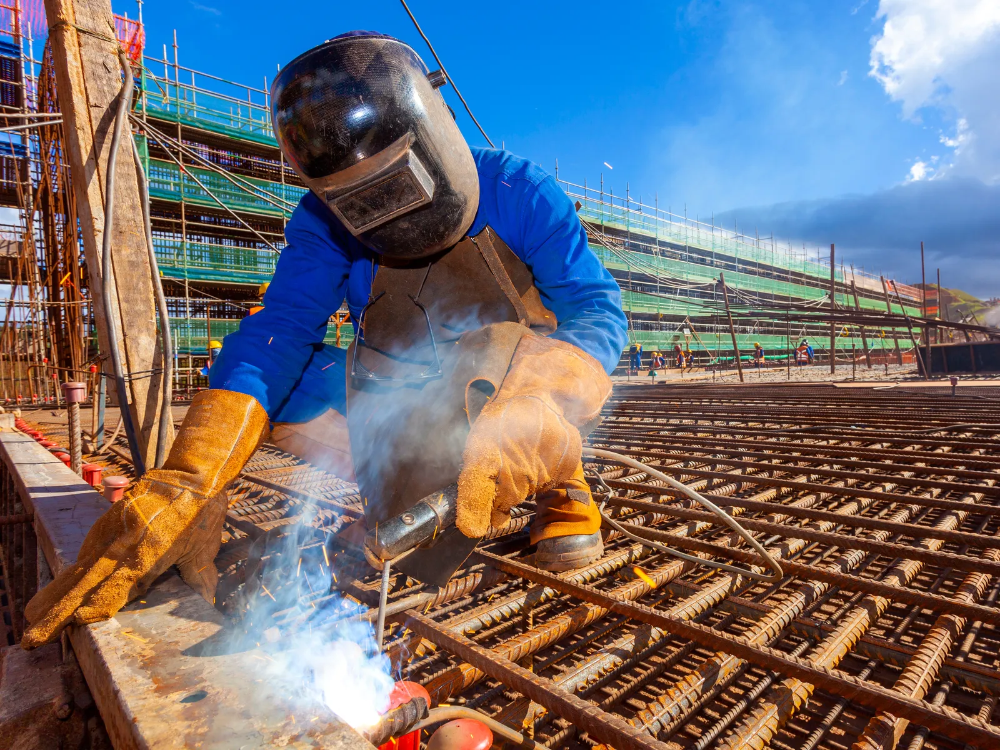

Home · Service Areas · Covington
Mobile Welders in Covington, LA
At Big Easy Mobile Welders, we weld and repair metal on site across Covington for homes and businesses. Our welders bring more than 20 years of experience and the full shop to your property in a mobile unit.

We come to the jobWhat Is Covered in Covington Mobile Welding Jobs?
A mobile welding job in Covington includes a free estimate with no obligation, a highly trained welder who arrives in a fully equipped mobile unit, careful prep that takes the joint down to clean metal, and a review of the finished weld with you before we leave your property.
A No-Cost Estimate
Every Covington job begins with a free quote that carries no obligation and no hidden fees.
Trained, Insured Welders
The welder on your job is licensed, insured and highly trained, part of a team with more than 20 years of experience.
A Mobile Unit at Your Door
We drive a fully equipped mobile unit to your property, so a heavy gate or fixed railing never needs hauling to a shop.
Prep Before the Arc
Brushes and grinders take rust, scale and old paint off the joint, giving the weld clean metal to bond with.
Homes and Businesses
From a front porch railing to a commercial bracket, we weld custom steel, aluminum and stainless for residential and commercial clients.
Follow-Up After the Job
We walk you through the finished work, offer easy payment options and stay available for follow-up support.

What Metal Repairs Send Covington Owners to a Mobile Welder?
Covington homeowners and businesses call a mobile welder when ironwork, gates or steel frames loosen, rust or break. Older homes near downtown may carry railings and fences that have weathered decades, while newer houses need gates hung, brackets made or a cracked frame put back together on site.
- Wobbly Porch Railing
- Rusted Iron Fence Pickets
- Gate Dragging on the Driveway
- Broken Hinge Weld
- Cracked Steel Stair Stringer
- Loose Handrail on Front Steps
- Corroded Metal Patio Furniture
- A Custom Bracket or Frame
Which Welding Services Can You Book in Covington?
We bring on-site welding services to Covington for gate, iron railing, custom, fence, arc and pipe welding, plus metal fabrication, window frame repair and specialized work. Every service is done at your address by our own welders and opens with a free, no-obligation estimate.

Pipe Welding
Pipe and pipeline repair on site, with stick and gas-shielded processes matched to the pipe.
View pipe welding →
Fence Welding
Fence repairs and custom fence fabrication, with the material and process chosen for your fence.
View fence welding →
Gate Welding
Gate repairs and custom gates in steel or aluminum, with materials and tools covered in your estimate.
View gate welding →
Iron Railing Welding
Custom indoor and outdoor railings for stairways, decks and balconies, built to fit your property.
View railing welding →
Arc Welding
Shielded and non-shielded arc welding for commercial and residential customers.
View arc welding →
Custom Welding
Custom ironwork, estimated before we start so we arrive with the right equipment for the job.
View custom welding →
How Do You Know It Is Time to Call a Welder in Covington?
Covington owners should call a welder when a metal piece shows movement, cracking or deep rust. Early repair usually keeps the job small, because a single failed joint is simpler to fix than a whole run of fence or railing that has been left to weaken further.
A Gate That Will Not Close Square
If a gate swings past its latch or scrapes the ground, a hinge weld or post may have given way.
Rust Bleeding From a Joint
Orange streaks running from a weld often mean moisture is getting into the seam. The steel underneath may already be thinning.
Visible Gaps or Breaks
A separated picket, a snapped bracket or a gap opening along a seam is a sign the weld is no longer carrying the load.
What Shapes Mobile Welding Work on Covington Properties?
Welding work in Covington is shaped by a housing mix that runs from homes built before 1940 to houses finished since 2010, a historic downtown laid out in square blocks, and humid air near its rivers. One job may mean saving aged ironwork, the next a new gate.

Local records point to the conditions we plan around.
- Mostly Single-Family Homes.According to the Census Bureau's 2020 to 2024 American Community Survey, 80.2 percent of Covington's 4,640 housing units are detached single-family homes.
- Century-Old and Brand-New.That survey dates about 7.6 percent of Covington homes to 1939 or earlier and about 20.3 percent to 2010 through 2019.
- A Grid From 1813.The original plan used square blocks around central lots where farmers kept oxen, and the historic district it created is listed on the National Register of Historic Places.
- Three Rivers Nearby.The city describes itself as nestled among three rivers, including the Bogue Falaya, and damp air near water can speed rust on welded steel that is left bare.

What Does a Local Mobile Welding Team Offer Covington Owners?
A local mobile welding company saves Covington owners the work of unbolting, loading and hauling metal to a shop, because the repair happens where the piece is installed. Our locally owned team has served New Orleans and nearby cities for many years and stays reachable after the job for follow-up support.
Owned in the Region
We are locally owned and have served New Orleans for many years, with Covington inside our regular service area.
Equipment on Wheels
Each fully equipped mobile unit brings the welding machines and tools to your driveway or job site.
Two Decades of Skill
Our highly trained welders have more than 20 years of experience.
Honest Numbers
Every quote is free and transparent, payment is simple, and no hidden fees show up afterward.
What Are the Steps in Mobile Welding in Covington?
Covington customers go from first call to finished weld in four steps: a free estimate request, a quote you approve along with a weekday time, on-site prep and welding by our team, and a final review together, with follow-up support whenever you need it later.
Tell Us About the Job
Phone (504) 370-2757 or use our estimate form to describe what broke, adding a picture when you can.
Set the Visit
After you say yes to the quote, pick a weekday slot that suits you, anywhere from 8 AM to 3 PM.
Prep and Weld
Our welder grinds the joint clean, lays the weld and inspects it while the mobile unit is still parked at your property.
Review Together
We show you the finished weld, answer your questions and remain available if anything needs a second look.
 The rig comes to you
The rig comes to youWhat Should You Settle Before Booking a Welder in Covington?
Before booking a welder in Covington, settle what the metal is, where the mobile unit can park, and whether the goal is fixing what is there or building something new. On older ironwork, it also helps to ask whether the original metal is worth saving, which we judge during the free estimate.
Know the Material if You Can
Iron, mild steel, aluminum and stainless each call for a different approach. If you are unsure, send a clear photo and we can usually tell.
Plan for Lasting Welds
Our guide on how to stop welds from cracking explains why clean metal and good fit-up matter.
Clear the Work Area
Move vehicles and anything flammable away from the piece, and tell us about pets.
Do Our Mobile Welders Travel Beyond Covington to Nearby Cities?
Our mobile welders travel well beyond Covington. The same team covers Mandeville, Madisonville and Slidell on the Northshore, Hammond and Baton Rouge to the west, and New Orleans, Metairie, Kenner, Gretna, St. Rose and LaPlace across the lake, all with free estimates.
- New Orleans
- Metairie
- Kenner
- Gretna
- St. Rose
- LaPlace
- Slidell
- Mandeville
- Covington
- Madisonville
- Hammond
- Baton Rouge
Not sure we cover your street?
Request a free estimate or call us, and we will confirm before we book the job.
Where Our Rigs Roll
Schematic, not to scale. New Orleans and the 11 nearby cities we serve.
About Covington
Covington sits along the Bogue Falaya River on Louisiana's Northshore and serves as the parish seat.
The Parish Seat
The parish courthouse moved across the Bogue Falaya to Covington in 1829, making the city the seat of St. Tammany Parish.
Population
The 2020 Census counted 11,564 people in Covington, up from 8,765 in 2010.
Mostly Owner-Occupied
The Census Bureau's 2020 to 2024 survey finds 69.7 percent of the city's occupied homes lived in by their owners.
Things To Do
A day in Covington can run from the Tammany Trace trailhead to the shops downtown and a riverside park.
Covington Trailhead
The trailhead sits at one end of the 31-mile Tammany Trace and has a campanile, a bandstand, an amphitheater and a visitor center.
Downtown Historic District
The walkable district holds shops, galleries, a small museum and more than 25 restaurants, with Lee Lane and Columbia Street the must-see stops.
Bogue Falaya Wayside Park
The riverside park has been a gathering spot for more than a century, and the river's sandy banks invite visitors to pull up and splash around.
Nearby Suburbs
Covington shares the Northshore with several other cities in our service area.
Mandeville
Mandeville lies on the Lake Pontchartrain shore, linked to Covington by the Tammany Trace through Abita Springs.
Madisonville
Madisonville is a small river town on the Tchefuncte with just over 800 residents inside its limits.
Slidell
Slidell marks the far eastern end of the Tammany Trace, which starts in downtown Covington.
Interesting and Fun Facts
Covington's past includes a different name, a war hero and a hotel that came back to life.
First Called Wharton
John Wharton Collins filed the town plan on July 4, 1813, proposing the name Wharton for his grandfather.
Renamed in 1816
A state charter in 1816 changed the name to Covington, honoring General Leonard Covington, who died in the War of 1812.
The Southern Hotel
Built in 1907, the Southern Hotel went decades without guests before reopening in 2014 as the centerpiece of the historic district.
Public Transportation
Public transit in Covington runs through STAR Transit, the parish's call-in, curb-to-curb ride service.
- STAR Transit: demand-response rides within St. Tammany Parish, open to every parish resident.
- Booking: reservations by phone at 985-327-0185, taken first come, first served.
- Hours: urban service 7 AM to 5 PM and rural service 7 AM to 4 PM, Monday to Friday.
- Half fare: available to seniors 60 and up, Medicare cardholders, riders with disabilities and kids ages 6 through 12.
- Tammany Trace: a paved hike-and-bike trail from the Covington Trailhead through Abita Springs, Mandeville and Lacombe to Slidell.
How Do Covington Owners Arrange a Free Welding Estimate?
Booking a free welding estimate in Covington takes a call to (504) 370-2757 or a few lines in our online form. Describe the piece, the metal if you know it and where it stands on the property, and we return a clear, no-obligation price with no hidden fees.
Loading the estimate form...
If it does not appear, call us at (504) 370-2757.

What Do Covington Property Owners Ask About Welding?
Covington owners most often ask how to hire a welder, how wrought iron differs from cast iron, whether a rust hole can be patched, how long outdoor welds last, whether welding near a house is safe, whether a bed frame can be fixed, whether they must be home for the visit and which parish Covington is in.
How do you hire a welder?
To hire a welder, look for licensed, insured welders with real experience, ask for a written estimate and confirm what the price includes. Our Covington estimates are free, with transparent pricing and no hidden fees, so you can compare before you commit.
What is the difference between wrought iron and cast iron?
Wrought iron is worked and bent into shape, so it is tough and slightly flexible, while cast iron is poured into molds and is harder but more brittle. Cast iron usually needs careful preheating and slow cooling to weld without cracking.
Can a welder patch a rust hole in steel?
A welder can often patch a rust hole by cutting back to solid metal and welding in a new piece of steel. If rust has spread through a whole post or rail, replacing that section usually lasts longer. Priming and painting the repair afterward helps keep new rust from forming.
How long does a weld last outdoors?
A sound weld on clean, well-fitted metal can last as long as the metal around it. Outdoors, the bigger threat is usually rust, so welds that are cleaned, primed and painted, then touched up when coatings chip, tend to hold up far longer than bare steel left to the weather.
Is it safe to weld near a house?
Welding near a house is usually safe when the work area is cleared of anything flammable, nearby siding and windows are shielded from sparks, and someone keeps watch for a while after the arc stops. Painted or galvanized metal gives off fumes, so people and pets are better off indoors until the work is done.
Can a welder fix a broken metal bed frame?
Many steel bed frames can be welded where a rail, slat support or corner bracket has snapped. Thin square tubing needs a careful, low-heat weld to avoid burning through, and a cracked factory weld is usually ground out first. Repainting the repaired spot keeps the finish consistent with the rest of the frame.
Do I need to be home when the welder comes?
You usually do not need to stay for the whole visit, but someone should be there at the start and the end. That lets you show the welder the piece, open any locked gates, then go over the finished work together.
What parish is Covington, LA in?
Covington is the seat of St. Tammany Parish, north of Lake Pontchartrain along the Bogue Falaya River, and the 2020 Census counted 11,564 residents there. Its walkable downtown historic district grew from a grid of square blocks laid out in 1813.


Book Your Free Mobile Welding Estimate
Tell us what needs welding, and we will bring the rig to your door anywhere in the New Orleans area.